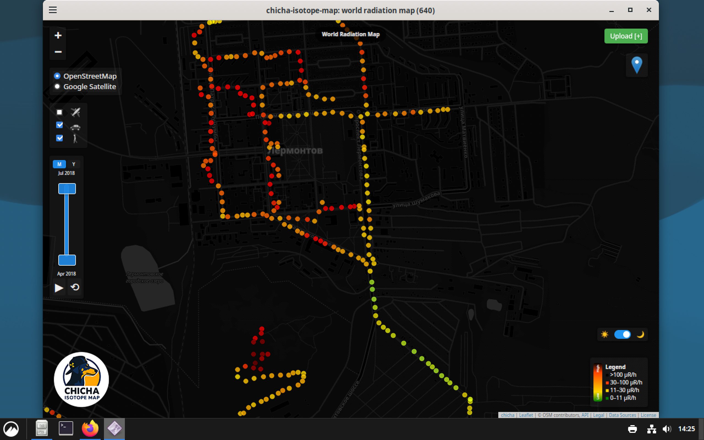

macOS Desktop Universal
Universal desktop app for Apple Silicon and Intel Macs.
Delivered as .app.zip.
 Download macOS Universal ZIP
Download macOS Universal ZIP
Desktop builds are now distributed as ZIP archives for Linux and Windows, so you can extract and run them with expected executable permissions. The page layout is refreshed in the style of the Pinokio download page.
Detecting your system...
Open downloadFor Linux and Windows, use the ZIP artifacts, extract them, and run the desktop binary from the extracted folder.
Universal desktop app for Apple Silicon and Intel Macs.
Delivered as .app.zip.
Download macOS Universal ZIP
Desktop build for Linux amd64 hosts.
Use the ZIP package.
 Download Linux amd64 ZIP
Download Linux amd64 ZIP
Desktop build for Linux arm64 hosts.
Use the ZIP package.

Download Linux arm64 ZIPDesktop build for modern Windows amd64 systems.
Use the ZIP package.
 Download Windows amd64 ZIP
Download Windows amd64 ZIP
Desktop build for Windows arm64 systems.
Use the ZIP package.
 Download Windows arm64 ZIP
Download Windows arm64 ZIP
curl -L -o chicha-isotope-map \ https://github.com/matveynator/chicha-isotope-map/releases/download/stable-release/chicha-isotope-map_linux_amd64 chmod +x chicha-isotope-map ./chicha-isotope-map
fetch -o chicha-isotope-map \ https://github.com/matveynator/chicha-isotope-map/releases/download/stable-release/chicha-isotope-map_freebsd_amd64 chmod +x chicha-isotope-map ./chicha-isotope-map
ftp -o chicha-isotope-map \ https://github.com/matveynator/chicha-isotope-map/releases/download/stable-release/chicha-isotope-map_openbsd_amd64 chmod +x chicha-isotope-map ./chicha-isotope-map
ftp -o chicha-isotope-map \ https://github.com/matveynator/chicha-isotope-map/releases/download/stable-release/chicha-isotope-map_netbsd_amd64 chmod +x chicha-isotope-map ./chicha-isotope-map